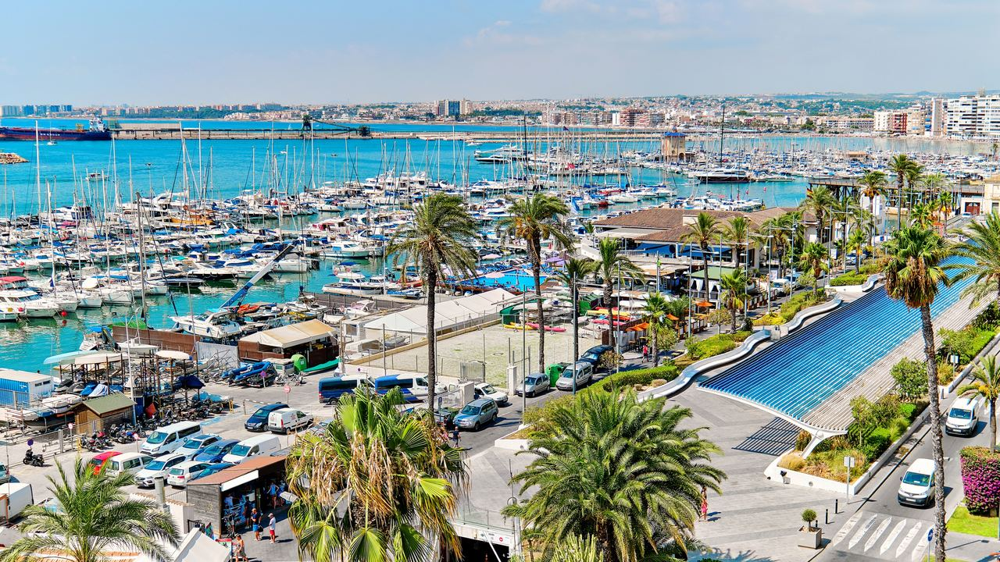
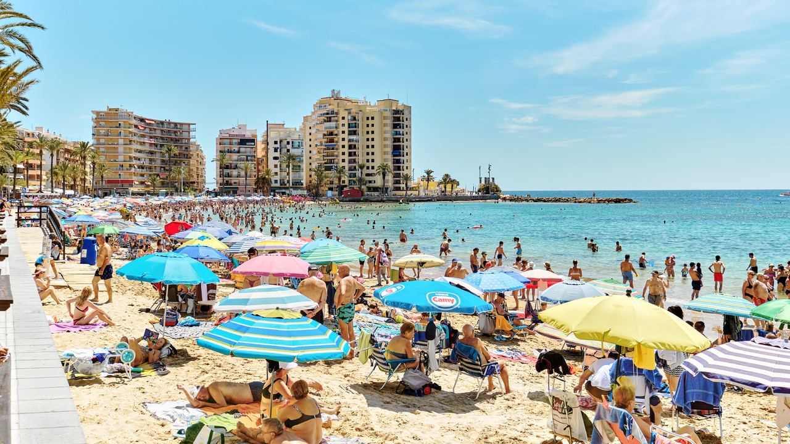
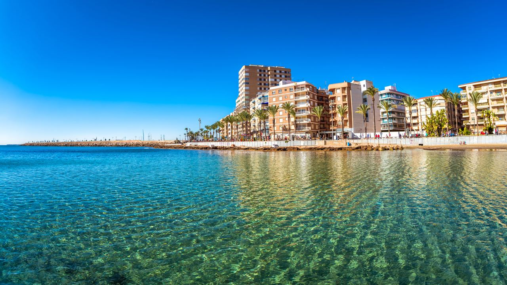

Orte · Costa Blanca
Torrevieja – Lebensstil, Immobilienpreise und Käufer
 Von Lucyna Gacek · · aktualisiert · 3 Min. Lesezeit
Von Lucyna Gacek · · aktualisiert · 3 Min. Lesezeit

Kurz gesagt: Torrevieja ist eine ganzjährig belebte Küstenstadt mit über 100.000 Einwohnern aus mehr als 100 Ländern und einigen der günstigsten Immobilien am Meer in Spanien. Bankbewertungen lagen im 3. Quartal 2026 laut Tinsa bei etwa 2.020 € pro m², 16 % mehr als im Vorjahr, die Angebotspreise bei rund 2.500 € pro m². Wohnungen gibt es ab unter 200.000 €. Gekauft wird von Spaniern, Briten, Skandinaviern, Deutschen, Belgiern und Niederländern, und die Nachfrage von Eigentümern und Mietern macht Weiterverkauf und Vermietung leicht.
Torrevieja hat sich vom Salz- und Fischerort zu einer der internationalsten Städte Spaniens entwickelt. Bekannt ist es für günstige Preise, doch es bietet viel mehr: eine lange Uferpromenade, zwei rosa Salzlagunen, alle Dienstleistungen und eine große Gemeinschaft, die das ganze Jahr hier lebt. So sieht der Markt 2026 aus.
Alltag

Torrevieja ist eine echte Stadt, kein Saisonort. Mit über 100.000 gemeldeten Einwohnern gehört es zu den größten Gemeinden der Provinz, Geschäfte, Gesundheitsversorgung, Schulen, Sport und Kultur laufen das ganze Jahr.
Das Leben spielt sich draußen ab: Spaziergänge auf den Promenaden Juan Aparicio und Vista Alegre, Baden am Playa del Cura, Los Locos oder La Mata, Radtouren um die Salzlagunen von La Mata und Torrevieja, einen Naturpark, dessen Wasser sich im Sommer rosa färbt. Die Kosten sind niedriger als in Alicante oder an der Costa del Sol: Ein Mittagsmenü kostet etwa 12–15 €, eine Wohnung mit einem Schlafzimmer kostet rund 650–900 € Miete im Monat.
Immobilienpreise 2026
- Bewertungen fertiger Wohnungen (Tinsa, 3. Quartal 2026): etwa 2.020 € pro m², 16,4 % mehr als vor einem Jahr.
- Angebotspreise (idealista, Mitte 2026): im Schnitt rund 2.500 € pro m², von etwa 2.200 € im Zentrum bis rund 3.000 € nahe Playa de los Locos.
Eine gebrauchte Wohnung mit einem oder zwei Schlafzimmern findet man noch für 130.000–200.000 €, Neubauwohnungen mit Gemeinschaftspool beginnen meist bei 220.000–250.000 €, Villen bei etwa 350.000 €. Die Preise sind seit 2024 deutlich gestiegen, Torrevieja bleibt aber einer der günstigsten Orte an der spanischen Küste.
Wer kauft in Torrevieja?
Die Einwohner stammen aus über 100 Ländern. Die größte Käufergruppe sind Spanier, gefolgt von Briten, Schweden, Norwegern, Deutschen, Belgiern und Niederländern, dazu immer mehr Käufer aus Mittel- und Osteuropa.
- Ruheständler, die Sonne, flache Wege und gute Krankenhäuser suchen.
- Familien und Remote-Arbeiter, die bezahlbaren Platz am Meer wollen.
- Anleger, die langfristig oder an Urlauber vermieten, denn die Nachfrage ist bei beidem hoch.
Diese Mischung macht den Markt liquide: Immobilien lassen sich vergleichsweise leicht verkaufen und vermieten.
Schulen, Gesundheit und Parks
- Gesundheit: die staatliche Universitätsklinik Torrevieja und das private Krankenhaus Quirónsalud Torrevieja.
- Schulen: staatliche Schulen im Ort und internationale Schulen in der Nähe, etwa El Limonar International School in Villamartín.
- Parks und Natur: Parque de las Naciones, der Pinienwald Molino del Agua am Strand von La Mata und der Naturpark der Lagunen.
Was sich verändert

Die Stadt investiert in Uferzone und Hafen, mit mehr öffentlichem Raum und einer neuen Promenade an der Playa de los Locos. Am Stadtrand plant das große Projekt La Hoya Lagoons Village Tausende neue energieeffiziente Wohnungen rund um eine Badelagune, gebaut in Phasen über viele Jahre.
Vergleichen Sie vor dem Kauf das Hausgeld, prüfen Sie den Zustand älterer Gebäude und klären Sie die Regeln für Ferienvermietung im Haus und in der Gegend.
Häufige Fragen
Was kostet eine Wohnung in Torrevieja?
Gebrauchte Wohnungen beginnen bei etwa 130.000–200.000 €. Neubauwohnungen mit Gemeinschaftspool meist bei 220.000–250.000 €.
Kann man in Torrevieja das ganze Jahr leben?
Ja. Die Stadt hat über 100.000 Einwohner, ein Krankenhaus, Schulen, Geschäfte und eine aktive internationale Gemeinschaft.
Sind die Immobilienpreise in Torrevieja gestiegen?
Ja. Laut Tinsa stiegen die Bankbewertungen bis zum 3. Quartal 2026 um etwa 16 % in einem Jahr.
Eignet sich Torrevieja für Vermietung?
Die Nachfrage ist bei Langzeit- und Ferienvermietung hoch. Die Rendite hängt vom Gebäude, dem Hausgeld und den aktuellen Regeln für Ferienwohnungen ab.
Bezahlbar und voller Leben
Torrevieja bietet Sonne, Meer und alle Dienstleistungen zu Preisen, die an der Küste kaum zu schlagen sind. Schreiben Sie uns für eine ehrliche Beratung zu den besten Lagen und aktuellen Angeboten.
Quellen: Tinsa – house prices in Torrevieja (Q3 2026) · idealista – property valuation in Torrevieja · Generalitat Valenciana – Lagunas de La Mata y Torrevieja Natural Park